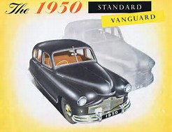
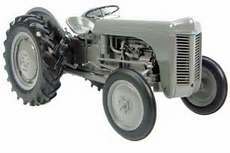
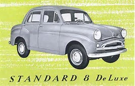
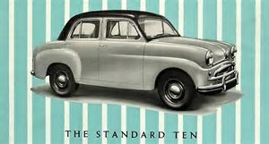
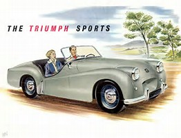
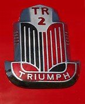

History of the Standard Motor Company Limited
The ‘Standard Motor Company’ was founded in Coventry in 1903 by Reginald Maudslay. He started his business in a small factory in Much Park Street, Coventry. Taking on a small workforce, he produced three cars during the first year, but then increased this to one every three weeks during 1904. The first engines were relatively simple single-cylinders, but quickly became more elaborate and powerful; gaining ‘Standard Triumph’ a good reputation and enabling it to build engines for other manufacturers as well as for their own cars. Maudslay is reputed to have said that he wanted the engines (and cars) to be of “the best possible standard”, giving rise to the company’s name.
By 1907, demand for the company’s products had grown, resulting in the need for bigger premises and the operation was moved to Cash's Lane, Coventry. The Union Flag badge was first used in 1909 and was the emblem on radiators until after the second world war.
In 1912, the then chairman of ‘Standard’, a Mr Friswell, sold his shares in the company. Amongst others, one of the purchasers was Siegfried Bettmann who was the founder of the ‘Triumph Motor Cycle Company’ (which then became the ‘Triumph Motor Company’). ‘Standard’ eventually became a public company in 1914; presumably to attract further investment. However, by the late 1920s profits in the company had decreased dramatically, partially due to poor sales of the larger cars. So, in 1927 a smaller car was introduced which boasted a fabric body and cost £185. John Black (later Sir John Black) joined the company in 1929, and it is his name that would later be associated with the ‘Triumph Mayflower’.
At the outbreak of the Second World War, a factory was constructed in Coventry’s Banner Lane. This was managed by ‘Standard’ on behalf of the Air Ministry. Amongst the company’s products was the ‘De Haviland Mosquito’, which also had a fabric bodywork. Once the war had ended, ‘Standard’ leased the factory and made Ferguson tractors there (in partnership with Harry Ferguson). At around the same time, the company also purchased the ‘Triumph Motor Company’, which had gone into receivership in 1939, and it was proposed that "Triumph Cars of Distinction" be produced to enable Standard to strengthen its position in the quality market. In 1959, the name of the company was officially changed to ‘Standard-Triumph’, and the Triumph brand-name was used on all its products (apart from the ‘Vanguard’, which flew the ‘Standard’ flag until 1953). Also at this time, all the company’s tractor assets were sold to Massey-Ferguson.
Standard’s policy of one-model was eventually changed, and the ‘Vanguard’ was joined by a smaller car: the ‘Standard Eight’ was introduced at £481, making it the cheapest four-door saloon on the market. The following year, the slightly higher-powered ‘Standard Ten’ was also added.
In 1954, the ‘Triumph TR2’ was unveiled – a 100 mph two-seater sports car which proved to be very popular. In fact, it started a ‘dynasty’ of sports cars which ran until the start of the 1980s. Much of the front suspension and running gear used on the TR2 was the same as that on the ‘Mayflower’, thus ensuring the availability of parts for many years.
Even with the introduction of smaller cars, ‘Standard’ was still losing out in the UK market to more modern competitor designs. Also, the ‘Triumph’ name was believed to be more marketable, so this was the beginning of the end for cars carrying the ‘Standard’ badge (although the company itself retained the ‘Standard-Triumph’ name). By 1959 the name ‘Standard’ had been dropped altogether, and the ‘Triumph Herald’ was introduced as a replacement for the Standards Eight, Ten and Pennant’. To build the ‘Herald’, the company invested £2.5 million in a new assembly hall extension at the Canley plant. Many of the mechanical components were carried over from the three earlier cars to the ‘Herald’. Despite the separate chassis and independent rear suspension, the differential, hubs, brakes, engine and gearbox were all common to the last ‘Standard Pennants’.
The ‘Standard-Triumph’ company was sold to ‘Leyland Motors Ltd’ in 1960 – the last ‘Standard’ (an ‘Ensign Deluxe’) was produced in the UK in May 1963, being replaced by the ‘Triumph 2000’ model. ‘Triumph’ continued when ‘Leyland’ became ‘British Leyland Motor Corporation’ (later BL) in 1968. The ‘Standard’ brand was finally ended in the UK on 17 August 1970, with the company name being changed to the ‘Triumph Motor Company’. The ‘Standard’ name continued to be used in Europe, and production of ‘Standard’ cars continued in India until the factory in Bombay (now Mumbai) closed in 1988.
The Canley plant in Coventry closed in 1980, with ‘Triumph’ production then being concentrated in Solihull.
BMW now owns the ‘Standard’ and ‘Triumph’ brands, following its purchase of ‘Rover Group’ (the successor to BL) in 1994.
Sources
This article is an amalgamation of information from various sources including: